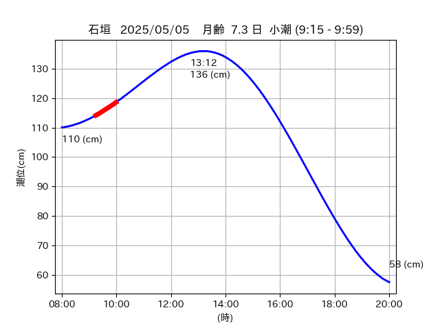

<!DOCTYPE html>
<html>
<head>
    
    <meta http-equiv="content-type" content="text/html; charset=UTF-8" />
    
        <script>
            L_NO_TOUCH = false;
            L_DISABLE_3D = false;
        </script>
    
    <style>html, body {width: 100%;height: 100%;margin: 0;padding: 0;}</style>
    <style>#map {position:absolute;top:0;bottom:0;right:0;left:0;}</style>
    <script src="https://cdn.jsdelivr.net/npm/leaflet@1.9.3/dist/leaflet.js"></script>
    <script src="https://code.jquery.com/jquery-3.7.1.min.js"></script>
    <script src="https://cdn.jsdelivr.net/npm/bootstrap@5.2.2/dist/js/bootstrap.bundle.min.js"></script>
    <script src="https://cdnjs.cloudflare.com/ajax/libs/Leaflet.awesome-markers/2.0.2/leaflet.awesome-markers.js"></script>
    <link rel="stylesheet" href="https://cdn.jsdelivr.net/npm/leaflet@1.9.3/dist/leaflet.css"/>
    <link rel="stylesheet" href="https://cdn.jsdelivr.net/npm/bootstrap@5.2.2/dist/css/bootstrap.min.css"/>
    <link rel="stylesheet" href="https://netdna.bootstrapcdn.com/bootstrap/3.0.0/css/bootstrap-glyphicons.css"/>
    <link rel="stylesheet" href="https://cdn.jsdelivr.net/npm/@fortawesome/fontawesome-free@6.2.0/css/all.min.css"/>
    <link rel="stylesheet" href="https://cdnjs.cloudflare.com/ajax/libs/Leaflet.awesome-markers/2.0.2/leaflet.awesome-markers.css"/>
    <link rel="stylesheet" href="https://cdn.jsdelivr.net/gh/python-visualization/folium/folium/templates/leaflet.awesome.rotate.min.css"/>
    
            <meta name="viewport" content="width=device-width,
                initial-scale=1.0, maximum-scale=1.0, user-scalable=no" />
            <style>
                #map_f9eeb5ca86a9226deddfe758fe59e69e {
                    position: relative;
                    width: 2048.0px;
                    height: 1600.0px;
                    left: 0.0%;
                    top: 0.0%;
                }
                .leaflet-container { font-size: 1rem; }
            </style>
        
</head>
<body>
    
    
            <div class="folium-map" id="map_f9eeb5ca86a9226deddfe758fe59e69e" ></div>
        
</body>
<script>
    
    
            var map_f9eeb5ca86a9226deddfe758fe59e69e = L.map(
                "map_f9eeb5ca86a9226deddfe758fe59e69e",
                {
                    center: [24.47, 123.801],
                    crs: L.CRS.EPSG3857,
                    ...{
  "zoom": 12,
  "zoomControl": true,
  "preferCanvas": false,
}

                }
            );

            

        
    
            var tile_layer_0ccc1fca8881739045222c387c79eaef = L.tileLayer(
                "https://cyberjapandata.gsi.go.jp/xyz/seamlessphoto/{z}/{x}/{y}.jpg",
                {
  "minZoom": 0,
  "maxZoom": 18,
  "maxNativeZoom": 18,
  "noWrap": false,
  "attribution": "\u5730\u7406\u9662\u5730\u56f3",
  "subdomains": "abc",
  "detectRetina": false,
  "tms": false,
  "opacity": 1,
}

            );
        
    
            tile_layer_0ccc1fca8881739045222c387c79eaef.addTo(map_f9eeb5ca86a9226deddfe758fe59e69e);
        
    
            var marker_411bfb43af342679c26b4ec81ae140b9 = L.marker(
                [24.475, 123.802],
                {
}
            ).addTo(map_f9eeb5ca86a9226deddfe758fe59e69e);
        
    
            var icon_2b9199a37b1f06642ae30d25fb82ee94 = L.AwesomeMarkers.icon(
                {
  "markerColor": "orange",
  "iconColor": "white",
  "icon": "info-sign",
  "prefix": "glyphicon",
  "extraClasses": "fa-rotate-0",
}
            );
        
    
        var popup_86098838edac402f817df391f84ad2d1 = L.popup({
  "maxWidth": "100%",
});

        
            
                var html_63d89a34440bbdb66d91e5149a1c24b7 = $(`<div id="html_63d89a34440bbdb66d91e5149a1c24b7" style="width: 100.0%; height: 100.0%;"><table><tr><td></td></tr><tr><td><center>20250505 No.1 </center></table></td></tr></table</div>`)[0];
                popup_86098838edac402f817df391f84ad2d1.setContent(html_63d89a34440bbdb66d91e5149a1c24b7);
            
        

        marker_411bfb43af342679c26b4ec81ae140b9.bindPopup(popup_86098838edac402f817df391f84ad2d1)
        ;

        
    
    
                marker_411bfb43af342679c26b4ec81ae140b9.setIcon(icon_2b9199a37b1f06642ae30d25fb82ee94);
            
    
            var poly_line_14d4c783e0f609483bc7642e934e58aa = L.polyline(
                [[24.475, 123.802], [24.4771, 123.8012]],
                {"bubblingMouseEvents": true, "color": "#FF00FF", "dashArray": null, "dashOffset": null, "fill": false, "fillColor": "#FF00FF", "fillOpacity": 0.2, "fillRule": "evenodd", "lineCap": "round", "lineJoin": "round", "noClip": false, "opacity": 1.0, "smoothFactor": 1.0, "stroke": true, "weight": 3}
            ).addTo(map_f9eeb5ca86a9226deddfe758fe59e69e);
        
    
            var marker_46728edf0cbf2fb344a1f41b42e45486 = L.marker(
                [24.4821, 123.8071],
                {
}
            ).addTo(map_f9eeb5ca86a9226deddfe758fe59e69e);
        
    
            var icon_d3362568cb616600e6fc9585c46baeed = L.AwesomeMarkers.icon(
                {
  "markerColor": "orange",
  "iconColor": "white",
  "icon": "info-sign",
  "prefix": "glyphicon",
  "extraClasses": "fa-rotate-0",
}
            );
        
    
        var popup_8c6242da56e6488958940b7b623475cf = L.popup({
  "maxWidth": "100%",
});

        
            
                var html_0731bbc388580634029565c3b90d539c = $(`<div id="html_0731bbc388580634029565c3b90d539c" style="width: 100.0%; height: 100.0%;"><table><tr><td></td></tr><tr><td><center>20250505 No.2 </center></table></td></tr></table</div>`)[0];
                popup_8c6242da56e6488958940b7b623475cf.setContent(html_0731bbc388580634029565c3b90d539c);
            
        

        marker_46728edf0cbf2fb344a1f41b42e45486.bindPopup(popup_8c6242da56e6488958940b7b623475cf)
        ;

        
    
    
                marker_46728edf0cbf2fb344a1f41b42e45486.setIcon(icon_d3362568cb616600e6fc9585c46baeed);
            
    
            var poly_line_7501458a08fd0ec28b0de6f5afa38280 = L.polyline(
                [[24.4821, 123.8071], [24.483, 123.8041]],
                {"bubblingMouseEvents": true, "color": "#FF00FF", "dashArray": null, "dashOffset": null, "fill": false, "fillColor": "#FF00FF", "fillOpacity": 0.2, "fillRule": "evenodd", "lineCap": "round", "lineJoin": "round", "noClip": false, "opacity": 1.0, "smoothFactor": 1.0, "stroke": true, "weight": 3}
            ).addTo(map_f9eeb5ca86a9226deddfe758fe59e69e);
        
    
            var marker_fada786d661b922e8f2b373db52a4950 = L.marker(
                [24.4794, 123.8029],
                {
}
            ).addTo(map_f9eeb5ca86a9226deddfe758fe59e69e);
        
    
            var icon_62d1458b72f7826cfa1927f569ee07bc = L.AwesomeMarkers.icon(
                {
  "markerColor": "orange",
  "iconColor": "white",
  "icon": "info-sign",
  "prefix": "glyphicon",
  "extraClasses": "fa-rotate-0",
}
            );
        
    
        var popup_a9c3421a11f6d270f50c8bae5f0b3dae = L.popup({
  "maxWidth": "100%",
});

        
            
                var html_2c9014ae5f24b8e477e199eb96edae42 = $(`<div id="html_2c9014ae5f24b8e477e199eb96edae42" style="width: 100.0%; height: 100.0%;"><table><tr><td></td></tr><tr><td><center>20250505 No.3 </center></table></td></tr></table</div>`)[0];
                popup_a9c3421a11f6d270f50c8bae5f0b3dae.setContent(html_2c9014ae5f24b8e477e199eb96edae42);
            
        

        marker_fada786d661b922e8f2b373db52a4950.bindPopup(popup_a9c3421a11f6d270f50c8bae5f0b3dae)
        ;

        
    
    
                marker_fada786d661b922e8f2b373db52a4950.setIcon(icon_62d1458b72f7826cfa1927f569ee07bc);
            
    
            var poly_line_d7fbe74c52633ec15a9218410282ba9b = L.polyline(
                [[24.4794, 123.8029], [24.4775, 123.8017]],
                {"bubblingMouseEvents": true, "color": "#00FFFF", "dashArray": null, "dashOffset": null, "fill": false, "fillColor": "#00FFFF", "fillOpacity": 0.2, "fillRule": "evenodd", "lineCap": "round", "lineJoin": "round", "noClip": false, "opacity": 1.0, "smoothFactor": 1.0, "stroke": true, "weight": 3}
            ).addTo(map_f9eeb5ca86a9226deddfe758fe59e69e);
        
    
            var marker_d7f6f71874ad70a6dee9be9f9ad62cdb = L.marker(
                [24.4676, 123.8008],
                {
}
            ).addTo(map_f9eeb5ca86a9226deddfe758fe59e69e);
        
    
            var icon_59db3470cebb21c4b749049c8808edbd = L.AwesomeMarkers.icon(
                {
  "markerColor": "orange",
  "iconColor": "white",
  "icon": "info-sign",
  "prefix": "glyphicon",
  "extraClasses": "fa-rotate-0",
}
            );
        
    
        var popup_90b37d8e2cea9bb5bee8f414be2a7606 = L.popup({
  "maxWidth": "100%",
});

        
            
                var html_fe087e6cdd67a631038d8fa26a8020c3 = $(`<div id="html_fe087e6cdd67a631038d8fa26a8020c3" style="width: 100.0%; height: 100.0%;"><table><tr><td></td></tr><tr><td><center>20250505 No.4 </center></table></td></tr></table</div>`)[0];
                popup_90b37d8e2cea9bb5bee8f414be2a7606.setContent(html_fe087e6cdd67a631038d8fa26a8020c3);
            
        

        marker_d7f6f71874ad70a6dee9be9f9ad62cdb.bindPopup(popup_90b37d8e2cea9bb5bee8f414be2a7606)
        ;

        
    
    
                marker_d7f6f71874ad70a6dee9be9f9ad62cdb.setIcon(icon_59db3470cebb21c4b749049c8808edbd);
            
    
            var poly_line_2b348509e184fbb1a9190992dca98930 = L.polyline(
                [[24.4676, 123.8008], [24.4728, 123.8015]],
                {"bubblingMouseEvents": true, "color": "#FF00FF", "dashArray": null, "dashOffset": null, "fill": false, "fillColor": "#FF00FF", "fillOpacity": 0.2, "fillRule": "evenodd", "lineCap": "round", "lineJoin": "round", "noClip": false, "opacity": 1.0, "smoothFactor": 1.0, "stroke": true, "weight": 3}
            ).addTo(map_f9eeb5ca86a9226deddfe758fe59e69e);
        
</script>
</html>